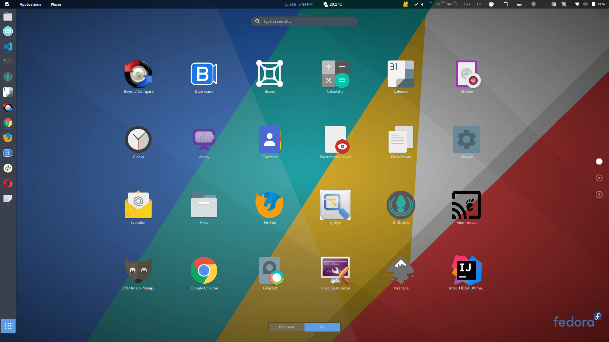
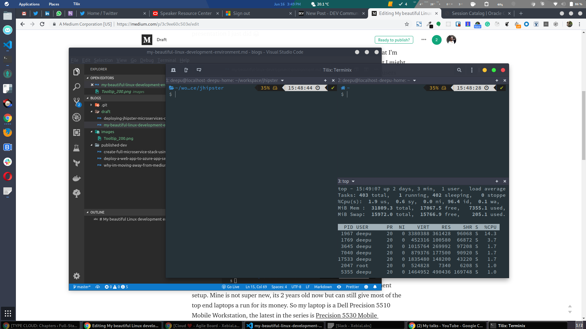
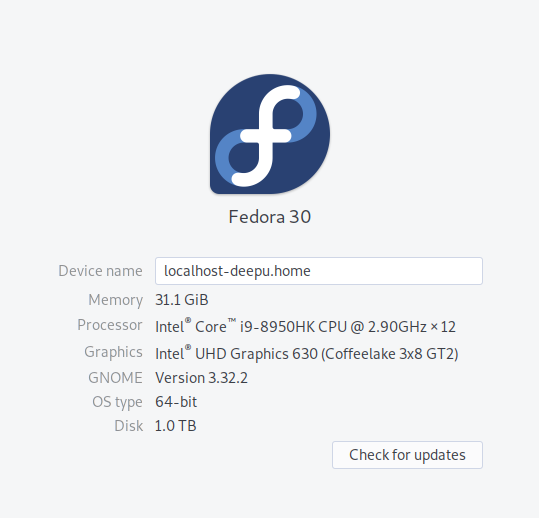
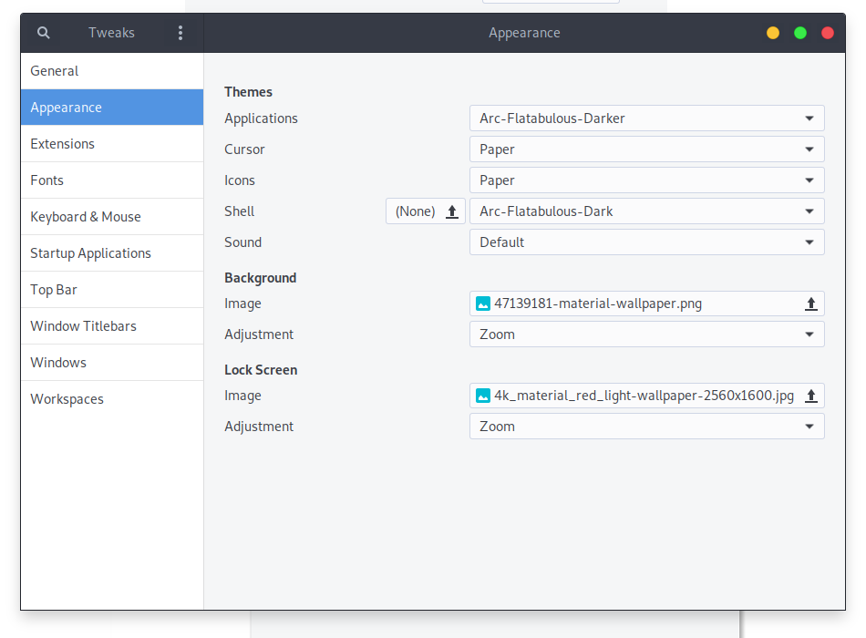
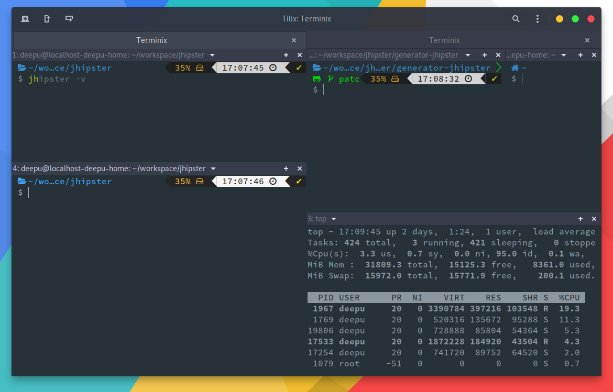

我在会议演讲后经常收到的一个问题很奇怪，不是关于我演讲的内容，而是关于我的Linux桌面环境。人们对这个漂亮的发行版更感兴趣，而不是我刚才做的精彩演示😂
我不是在抱怨，我喜欢我的桌面设置。我非常喜欢它，以至于在我该买一台新PC的时候，我都不敢去买。我担心自己会把事情搞砸（我过去曾多次这样做，我想Linux用户可以和我有同感）。
因此，我决定为任何有兴趣使用Linux作为其主要操作系统进行开发的人介绍我的发行版最重要的方面。

这不仅仅是我的工作笔记本电脑；这是我用于以下所有内容的主要机器。
Java、JS、TS、Go、Python和web开发
JHipster 开发
在本地运行多个web应用程序
运行Docker容器
用于Windows测试和其他虚拟机的VirtualBox
Kubernetes、Terraform、CloudFormation 开发和部署
使用必要的CLI工具进行Azure、AWS和GCP部署
大量使用浏览器
电子邮件、聊天和视频会议
Plex 媒体服务器
博客
Youtube与社交媒体
机器的配置对于任何开发都非常重要。所以我的笔记本电脑是戴尔Precision 5530移动工作站。我的旧Dell 5510也有完全相同的设置。我仍然把它作为备用笔记本电脑，它已经有两年的历史了，但它仍然有比今天的大多数高端笔记本电脑更好的性能。
当时，我使用Dell的自定义配置选项来获得最佳设置。这并不便宜，但我的公司XebiaLabs提供了可观的预算，我认为每一分钱都是值得的。在我看来，这是开发人员最好的笔记本电脑之一。下面是我电脑的配置：
处理器： Intel® Core™ i9-8950HK CPU @ 2.90GHz × 12
内存: 32GB, DDR4-2666MHz SDRAM, 2 DIMMS, Non-ECC
硬盘: M.2 1TB NVMe PCIe SED class 40 SSD
显卡: NVIDIA Quadro P2000 with 4 GB GDDR5 memory & Intel® UHD Graphics 630 (Coffeelake 3x8 GT2)
无线网卡: Intel Wifi Link 9260 2x2 802.11AC + BT 4.2 vPro wireless card
键盘: English QWERTY US, backlit
显示器: 15.6寸 FHD 1920x1080 Anti-Glare LED-backlit Non-touch IPS UltraSharp™
电池: 带快速充电的6芯（97Wh）锂离子电池™
当然，最重要的是操作系统。我目前使用的的是 Fedora 30 ，桌面是GNOME 3.32.2，我很满意。我发现Fedora比其他发行版更适合于开发机器，因为它的发布周期短，而且相当稳定，所以您可以随时获得最新且稳定的软件。

没有漂亮主题的桌面有什么用，对吧？当涉及到主题时，GNOME是很棒的，我选择了 Arc-Flatabimous 主题，并且从没后悔过。对于图标，我使用 Paper，因为我喜欢带Material风格图标的主题。

当然，如果没有一些不错的GNOME插件，它是不完整的。下面是我使用的插件。
接下来，介绍的这些都是客观的选择，只要你对所选择的工具感到满意，其实并不重要。以下是我对一些重要开发类别的选择。不包括像 Vim、Git、NodeJS、Docker、Kubernetes等显而易见的东西。
Shell：这对于开发人员来说是最重要的。我使用 ZSH 和很棒的 Oh My ZSH 作为我的shell工具。当然，如果没有一些漂亮的插件和主题，这将是不完整的。我使用 powerlevel9k 主题并进行了一些定制。我还为Oh My ZSH 安装了 zsh-autosuggestions、git、docker、docker-compose、autojump、zsh-syntax-highlighting、dnf和npm插件。这是我的.zshc文件，其中包含所有自定义内容。
这篇文章的一条评论建议用 powerlevel10k 替代 powerlevel9k 主题，我尝试了一下，结果证明它确实比powerlevel9k快得多。所以我想我要用powerlevel10k作为我的shell主题。
Terminal：没有好的终端，好的 shell 有什么用。幸运的是，我们有 Tilix ，这是目前最好的终端应用程序之一。它有工作区、选项卡、拆分窗口、Quake模式等等。

集成开发环境（IDE）：IntelliJ IDEA Ultimate - 我用它来开发Java和其他JVM语言
代码编辑器：Visual Studio Code - 我的首选编辑器。我喜欢它。我使用VSCode进行web开发、Go、Python、JS开发、DevOps，以及除了JVM语言之外的一切。如果没有一些好的插件，VSCode的设置是不完整的。这儿是我正在使用的插件。您可以运行脚本来安装他们。
我使用的其他值得注意的开发工具有GitKraken 用于Git仓库管理、Beyond Compare 用于代码比较、VirtualBox、NVM 用于 NodeJS版本管理和SDKMan 用于JDK版本管理。
生产力工具也非常重要，下面是我的选择。
浏览器：谷歌浏览器是我的主要浏览器。我有时也使用Firefox和Opera。我确实喜欢Opera的用户体验，我很想把它作为我的主要浏览器，但我不能没有我在 Chrome 中我的 Google 帐户同步的所有内容。
电子邮件：我使用 Mailspring 作为我的电子邮件客户端。这是一个相当不错的邮件客户端，有很好的主题和简单的用户界面。
Office：我主要在线使用 Google Docs 和 Microsoft Office，但是当我必须在桌面上处理某些事情时，我会使用 LibreOffice，这是一个很好的 Office 套件，甚至可以处理 Microsoft Office 和 Keynote 格式文本。
通讯：我使用 Slack，而对于视频会议，我使用 BlueJeans。
屏幕截图：我使用这个名为 Peek 的漂亮工具进行屏幕录制，使用 Shutter 进行屏幕截图。
我还使用了许多其他小而精巧的应用程序；大多数是命令行应用。有一些值得提及，例如 Timeshift，它非常适合备份您的电脑。
当然，在 Linux 世界中并非一切都是完美的，但对于每个操作系统都是一样的。在切换到 Linux 之前，我是 Windows 的长期用户。所以和每个 Linux 用户一样，我时不时会把事情搞砸。 Linux 世界中有许多古怪的现象，但没有什么能让我感到困扰。我过去遇到的一些最烦人的问题如下，现在，我没有任何明显的问题。
切换应用程序时滚动位置跳动 - 升级到 Fedora 30 后修复
休眠被打断 - 升级到 Fedora 30 后修复
插入耳机时不能选择音频输出方式 - 在 Fedora 28 后修复
希望这个对你有帮助。如果您有任何问题，或者您认为我遗漏了什么，请添加评论。
如果你喜欢这篇文章，请留下一个赞或评论。
本文译自文章My beautiful Linux development environment
[1] Fedora 30: https://getfedora.org/[2] GNOME 3.32.2: https://www.gnome.org/[3] Arc-Flatabimous: https://github.com/andreisergiu98/arc-flatabulous-theme[4] Paper: https://github.com/snwh/paper-icon-theme[5] Dash to Dock: https://extensions.gnome.org/extension/307/dash-to-dock/[6] Always Zoom Workspaces: https://extensions.gnome.org/extension/503/always-zoom-workspaces/[7] Auto Move Windows: https://extensions.gnome.org/extension/16/auto-move-windows/[8] Native Window Placement: https://extensions.gnome.org/extension/18/native-window-placement/[9] Launch new instance: https://extensions.gnome.org/extension/600/launch-new-instance/[10] Steal My Focus: https://extensions.gnome.org/extension/234/steal-my-focus/[11] AlternateTab: https://extensions.gnome.org/extension/15/alternatetab/[12] Window List: https://extensions.gnome.org/extension/602/window-list/[13] Applications Menu: https://extensions.gnome.org/extension/6/applications-menu/[14] Caffeine: https://extensions.gnome.org/extension/517/caffeine/[15] Clipboard Indicator: https://extensions.gnome.org/extension/779/clipboard-indicator/[16] Gistnotes: https://extensions.gnome.org/extension/917/gistnotes/[17] OpenWeather: https://extensions.gnome.org/extension/750/openweather/[18] Places Status Indicator: https://extensions.gnome.org/extension/8/places-status-indicator/[19] System-monitor: https://extensions.gnome.org/extension/120/system-monitor/[20] Todo.txt: https://extensions.gnome.org/extension/570/todotxt/[21] TopIcons Plus: https://extensions.gnome.org/extension/1031/topicons/[22] User Themes: https://extensions.gnome.org/extension/19/user-themes/[23] ZSH: https://www.zsh.org/[24] Oh My ZSH: https://ohmyz.sh/[25] powerlevel9k: https://github.com/bhilburn/powerlevel9k[26] zsh-autosuggestions: https://github.com/zsh-users/zsh-autosuggestions[27] zsh-syntax-highlighting: https://github.com/zsh-users/zsh-syntax-highlighting[28] .zshc文件: https://gist.github.com/deepu105/9723cb70032eca98ff09d110369af67a[29] powerlevel10k: https://github.com/romkatv/powerlevel10k[30] Tilix: https://gnunn1.github.io/tilix-web/[31] IntelliJ IDEA Ultimate: https://www.jetbrains.com/idea/[32] Visual Studio Code: https://code.visualstudio.com/[33] 这儿: https://gist.github.com/deepu105/4599d3b381218b9d1a63119fbf9ca537[34] GitKraken: https://www.gitkraken.com/[35] Beyond Compare: https://www.scootersoftware.com/[36] VirtualBox: https://www.virtualbox.org/[37] NVM: https://github.com/nvm-sh/nvm[38] SDKMan: https://sdkman.io/[39] Mailspring: https://getmailspring.com/[40] LibreOffice: https://www.libreoffice.org/[41] Slack: https://slack.com/[42] BlueJeans: https://www.bluejeans.com/[43] Peek: https://github.com/phw/peek[44] Shutter: https://launchpad.net/shutter[45] Timeshift: https://github.com/teejee2008/timeshift[46] My beautiful Linux development environment: https://deepu.tech/my-beautiful-linux-development-environment/